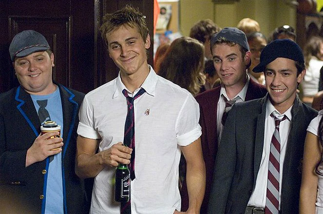
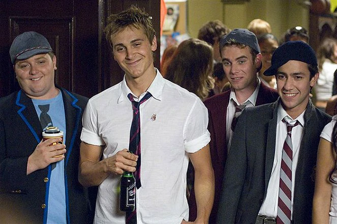

Prci, prci, prcičky: Spolek Beta
 

Série "Prci, prci, prcičky" je mou osobně oblíbenou sérií, ale to platí pouze v případě té základní série, která pro mě vyvrcholila filmem "Prci, prci, prcičky: Školní sraz". Druhá série, která běžela bez hlavních postav, je v originále vždy uvozena trojicí úvodních slov "American Pie Presents...". Sem se řadí čtveřice filmů, jejichž chronologie je následující:
- 2005: "Prci, prci, prcičky: Na táboře"
- 2006: "Prci, prci, prcičky: Nahá míle"
- 2007: "Prci, prci, prcičky: Spolek Beta"
- 2009: "Prci, prci, prcičky: Kniha lásky"
První dva filmy jsem již viděl, ale pokud se nepletu, zatím jsem na ně recenze nepsal. Pochybuji, že bych se k těm dvěma filmům někdy vrátil, ale možné je všechno. Nyní ale k filmu s podtitulem "Spolek Beta". Ten začíná tím, že parta borců, je mezi nimi i nějaký ten Stifler, jak jinak, ale ono je to tak trochu jedno. Stifler, rovná se trouba, co chce ojíždět holky. Sem tam má některý z nich trochu svědomí, ale to vlastně jen na konci, aby ukázal, že je vlastně správný kluk.
Vzhledem k tomu, že na školu se dostávají noví kluci, je potřeba, aby se začlenili, a musejí si získat uznání svých starších kolegů. To souvisí s tím, že musejí splnit celkem padesát úkolů a mohou se stát oficiálními členy bratrstva. O tom je první část filmu, že ti borci plní úkoly, které jsou nějak spojené se sexem a jinými blbinami. Samozřejmě, že se jim to povede, protože ono ve filmu nakonec jde o něco jiného. Druhá polovina se totiž zaměřuje na souboj dvou bratrstev. Na jedné straně spolek Beta a na straně druhé spolek nerdů. Je to souboj na život a na smrt. Jde totiž op řeckou olympiádu, což je souboj v pěkně úchylných disciplínách. Anebo spíš pěkně blbých. Jen jedna je skutečně pořádně ujetá a tu vás nechám si užít v nevědomosti, protože skutečně stojí za to.
O co jinak ve filmu jde? Vlastně o nic moc. Je zde snaha ukázat divákům nějaké ty vtipy, které jsou spojené se sexem nebo zvracením. Ten repertoár je celkem slabý jako celý ústřední příběh, kterému chybí skutečně zajímavá zápletka a nějaké to pořádné vyvrcholení. No, to bych zase lhal, těch vyvrcholení je zde několik, ale ty nejsou spojené se zápletkou. Jedná se tak o klasické gagy, které jsou na sebe vršené, a čím víc se u nich chlastá a řve, tím lépe. Jediné, v čem snímek vyniká, to je počet obnažených ňader a jejich různých tvarů. Chlap si to užije. A to je vše. Nápaditost nulová, hraje se na debilitu. Ale od "American Pie Presents" nemůžete čekat nic jiného. Vezou se na úspěšné značce a míří rovnou na video.
Abych zase snímku moc nekřivdil, jsou zde momenty, kdy jsem se musel zasmát. Pokaždé jsem ale měl pocit, že už je to tak pitomé, že ani nemohu jinak. Prostě jsem se musel smát. Jinak ale nic. Scenáristická nuda, která je podpořena nezajímavými postavami. I u těch borců máte pocit, že v jakémkoli jiném filmu by to byl materiál pro nerdy. Za to rozesmání na několika místech si film procenta zaslouží, ale k průměru v oblasti teen komedií se dostává jen pozvolna.
Komentáře (2)
Daniel Hegr@danik1361d
Ten film mi byl taky jedno. Moc se mi nelíbil.
Vojtěch Štěrba@sterbixn162d
Na tento film jsem se koukal s mojí maminkou. Moc se jí bohužel nelíbil. Hodnotím jednou hvězdičkou.